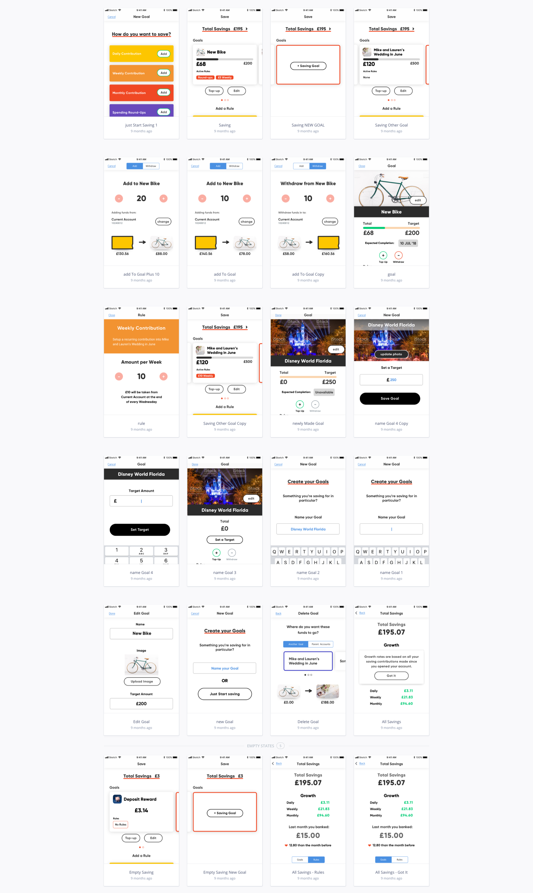

Project Imagine
I was hired as Service Designer to kickstart the process of creating their native app. This new, engaging and difficult problem required me to continuously present my research, wireframes and IA plans to a growing multi-disciplinary team.

A near daily occurence: communicating and discussing the latest thinking on the information architecture and discovery models.
The job was to create a “second-generation” challenger bank and wealth management platform. It’s USP was granting access to high return products based on “good financial behaviour” and not on one’s net worth.
One major discovery from my research was the changing definitions of “good behaviour” depending on where a person was in their financial life.
Working across a range of customer segments, we went from conceptual financial product to pixel-perfect prototype including some pretty sophisticated interaction design in 6 weeks.
The project is in continuous development under the trading name, Dozens.